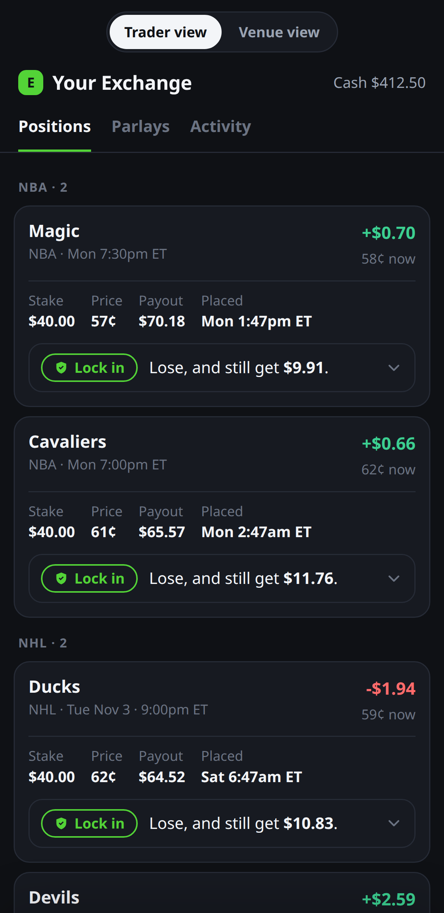

For River Markets · Nov 02, 2026
The other side of retail protection, pre-game, across your venues.
A retail holder on Kalshi, ProphetX or Novig taps Lock in on a position they already hold and gets a floor and a cap for a credit paid now. Atticus prices it and buys the other side on the exchange's book, at the cheapest venue all in, venue fees included. Nothing bilateral: the holder's position stays on the exchange, and so does ours. What comes out is a flow your venues do not carry today: the opposing outcome of what retail already holds, bought pre-game, with no view.
What it is worth to an execution layer
Flow your desks do not have
Every order is the opposite side of a position a retail holder owns, placed pre-game with no view: the least informed flow in the market. Today it meets whoever is on the screen.
A client already on your venues
We built a cross-venue router because none existed: ask every venue, rank all in with fees and settlement rules folded in. That is your stack's work; one integration beats four adapters.
Demand the screens cannot fill
Last week Novig priced 30% of the time it was asked; ProphetX 2%. 23 of 232 markets were declined: the other side cost too much on the screens to leave a worthwhile credit. Measured weekly, by venue, in public.
The record, live since Sep 12, 2026
1,322
positions protected, 1,120 settled
$3,989.05
paid to holders at the tap
43%
floor saves: holder finished above the unprotected outcome
659
positions priced in the last 4 weeks, 6 of them real taps
$487 our P&L
$486.99 take booked
$486.99 take booked
Gap $0.01 on all 1,120 settled positions: our P&L equals the take booked at quote time, to the cent. We earn the published take and nothing on the result. MLB, Bitcoin strikes, NFL, NBA, NHL; 113 parlay tickets, 41 locks priced at the last pick. Every row public, with a receipt; refusals recorded beside the fills.
Where the other side went · Week of Oct 26 – Nov 1
| venue | singlesother side won · n | fee¢ per contract | priced when askedof 100 positions |
|---|---|---|---|
| Kalshi | 65.6% 135 | 0.63¢ | 100% 100 of 100 |
| Polymarket | 26.9% 55 | 0.00¢ | not asked |
| ProphetX | <1% 1 | 0.72¢ | 2% 2 of 100 |
| Novig | 7.5% 18 | 0.00¢ | 30.5% 29 of 95 |
220 positions (209 singles, 11 parlay locks at the last pick), 31,393 contracts, $8,033 of the other side bought, 5 real taps. Kalshi prices every time because it is the market's own book; the others are asked for the same position at the same second. Fee: each venue's schedule at the price paid. Edge over the runner-up and refusals by reason are on the scoreboard.
How it fits, in sequence
Now
Live across your venues with our own router. The record and the venue scoreboard are public and weekly: the flow and its venue comparison are there to read, nothing to integrate.
Next
The other side routed through River's execution API in place of four venue adapters; your desks see it on the screens first. One client, one new flow type. Size grows with the venues' holders, not on a promise.
Later
Where the screens are thin, a quote request for the other side at size to your desks, filled on the venue, screen as fallback: the shape our perpetuals stack runs today. Positions and margin consolidated across venues as your capital work ships. The hedge is paid for by the credit: the most capital-efficient leg you will carry.

The retail origin. Their venue's shell, our line under every position: one tap, two endings, cash now. The receipt names the venue that took the other side. A browser extension on the venues' pages, or an embed.
Scoreboardatticus-event-shadow.onrender.com/scoreboardBy week and venue: other side won, edge, fee, availability, refusals. CSV and JSON at the top.
Track recordatticus-event-shadow.onrender.comEvery number on this page, live. Positions CSV at /api/shadow/positions.csv.
Demoevent.earnandprotect.xyzTrader view and Venue view; ?tab=parlays for the parlays.
What it is notA market maker, a signal, or custody. No funds held, no view taken; the P&L is the published take whoever wins.
Michael William, founder · michael@atticustrade.com
Same engine on Bitcoin perpetuals: public shadow facility since July 2026, screen read then block RFQ.
Same engine on Bitcoin perpetuals: public shadow facility since July 2026, screen read then block RFQ.
Numbers as of 2026-11-02 21:02 UTC.
Positions on the record are simulated at live prices except the taps, which are real holders' locks.
Positions on the record are simulated at live prices except the taps, which are real holders' locks.